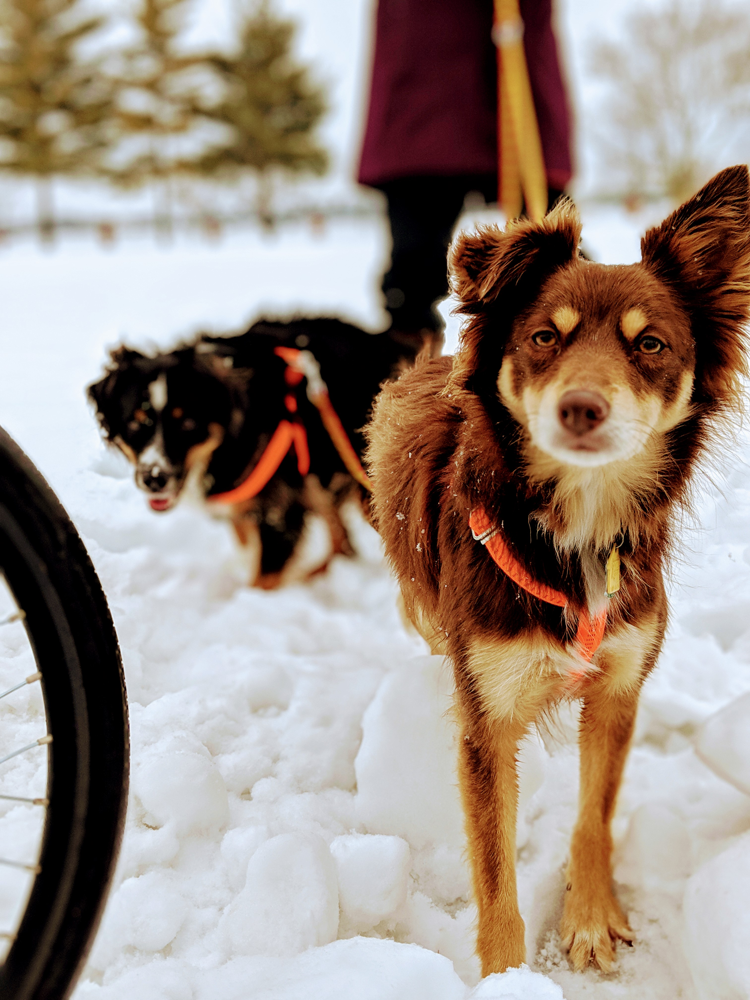
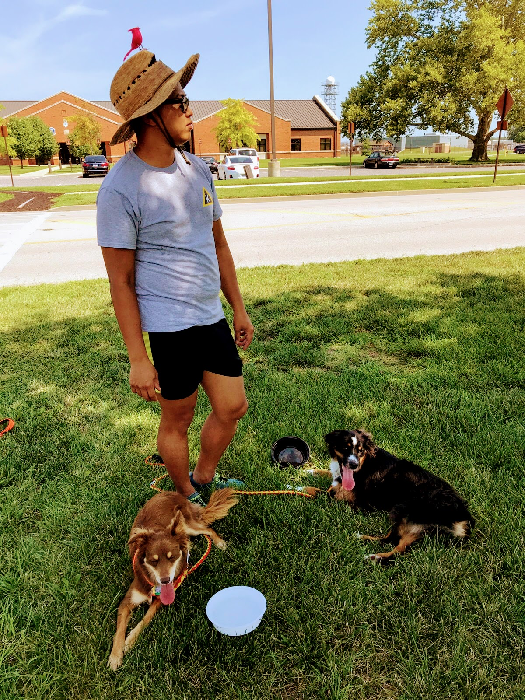
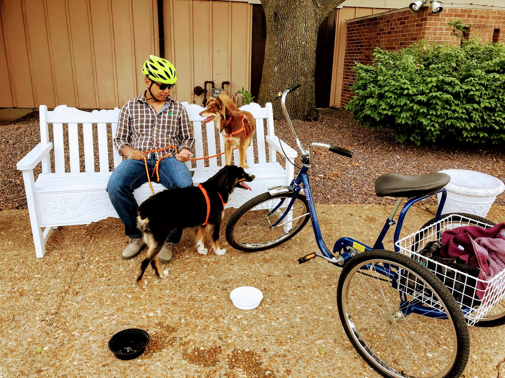
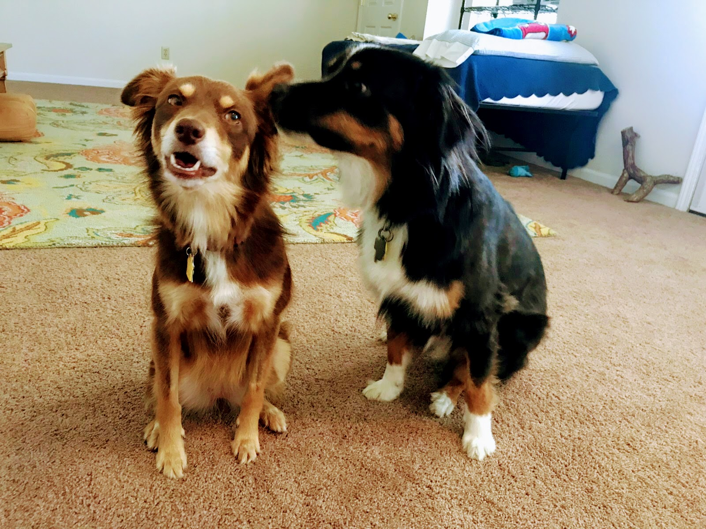

SIT...PLEASE SIT

Toffee and Alfie are pretty decent, housetrained, dogs.
They are not well-trained dogs, unfortunately.
Some things I would hope to work on improving with them...:
- Reliable stay.. so they don't lunge and chase ________.
- Reliable come.. so don't have to chase them so far/long chasing after _______.
- Reliable shhh.. so they're less embarassing when they bark their heads off at ______.
- Positional commands (pull, slow, right/left side)... so we can bicycle safer.
SUCH DAGGY. MUCH FUN.
Most of the time




What if in the dog world, humans are elves that routinely live to be 500+ years old?
"They live so long… but the good ones still bond with us for our entire lives."
"These immortals are so kind we must be good friends to them."
Many dogs never get to see their owners grow old and weak:
"Now I am old. The fur around my muzzle is grey and my joints ache when we walk together. Yet she remains unchanged, her hair still glossy, her skin still fresh, her step still sprightly. Time doesn’t touch her and yet I love her still."
But some do:
"For generations, he has guarded over my family. Since the days of my great-great-great-great-great-grandfather he has kept us safe. For so long we thought him immortal. But now I see differently, for just as my fur grows gray and my joints grow stiff, so too do his. He did not take in my children, but gave them away to his. I will be the last that he cares for. My only hope is that I am able to last until his final moments. The death of one of his kind is so rare. The ending of a life so long is such a tragedy. He has seen so much, he knows so much. I know he takes comfort in my presence. I only wish that I will be able to give him this comfort until the end."